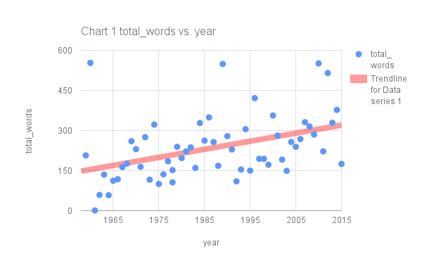
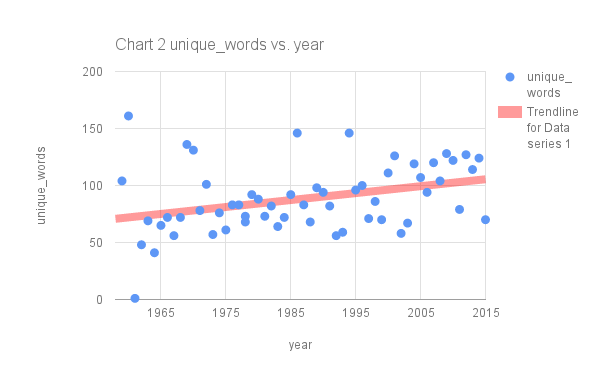
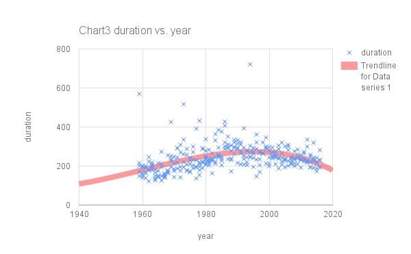
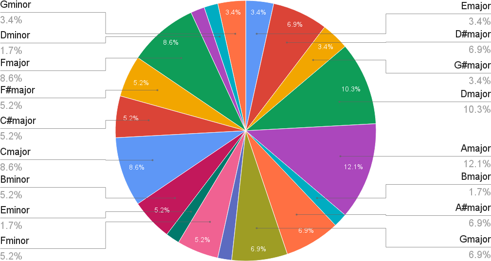
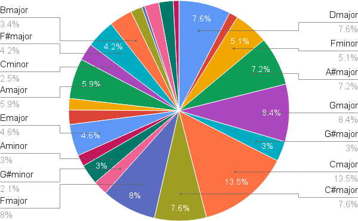
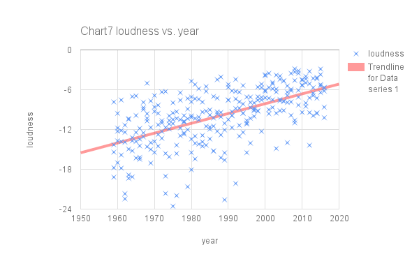
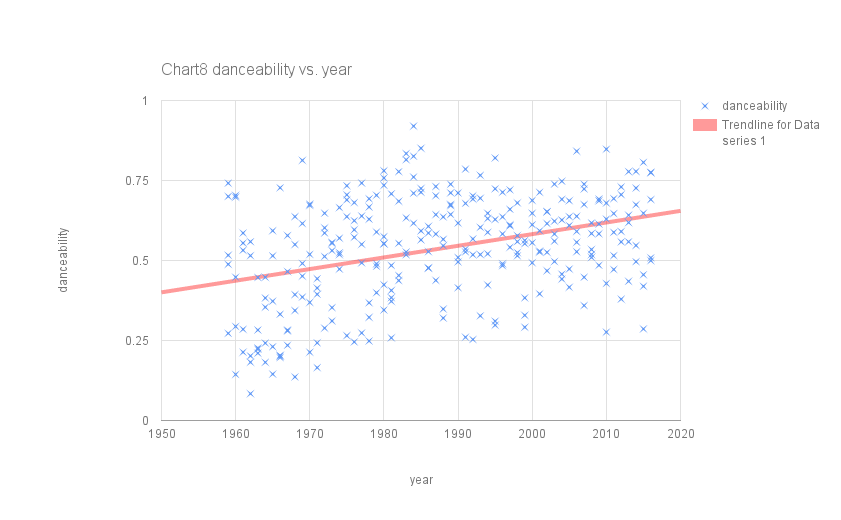
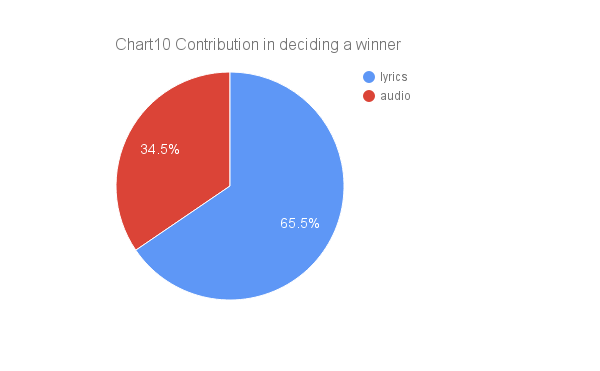

Predicting the Grammies with data
Analysing lyrics and music to predict the winner for Song of the Year 2016
By Varun Jewalikar and Federica Fragapane at Musixmatch
10th February, 2016 (6 min read)
By Varun Jewalikar and Federica Fragapane at Musixmatch
10th February, 2016 (6 min read)
Since 1959 the National Academy of Recording Arts and Sciences has presented a Grammy Award for Song of the Year. Every year 4-5 songs are nominated and the best amongst them is given this award. We wanted to study the trends in the lyrics and music of these songs. As a fun exercise, we used this understanding of the trends to build a computational model which predicts the winner of this year's award.
Song of the year 2016 predictions

So, let us take a look at how we did it.
Volare by Domenico Modugno, performed in Italian, is the only foreign language song to ever win this prize. La Bamba by Los Lobos , performed in Spanish, is the only other foreign language song to be nominated. All the other songs are either in English or instrumental.
Musixmatch automatically analyses whether a song is instrumental or not. Only 6 instrumental songs have been nominated for Song of the year and of them only one, Theme of Exodus by Ernest Gold (1961), has won the award.
Instrumental songs
The wordiest song (total words and unique words) to win this award is The Battle of New Orleans by Johnny Horton. The wordiest nominee is I'd Do Anything by Meatloaf but if we count unique words Lose Yourself by Eminem comes out on the top.
Total word count
The total word count rises by almost 4 words every year.
Unique word count
The unique word count rises by almost 1 word every year.
Rolling in the deep by Adele is the only song with a profanity (shit) to win this award. 17 of the nominated songs contain profanity.
Songs containing profanity
We trained a deep learning model (Doc2Vec by Google) using 150k lyrics. This model automatically infers the semantics in pieces of text and places the text in an n-dimensional space (n = 100 in our case), such that texts which are similar are located closer (a very simplified/naive explanation of the complex mathematics going on in the background). We used this model to calculate 100 more lyrics metrics (apart from the ones above) for training the award prediction model. It is difficult explain which characteristic of the text corresponds to each of these metrics but a more detailed explanation can be found here.
Echonest, a music intelligence platform, provides a bunch of interesting metrics calculated from the audio of a song. We scanned the 295 songs studied here in the Echonest database and here are some of the interesting musical trends.
We Are the World by USA for Africa is the longest song (427 seconds) to win the award. I'd Do Anything by Meatloaf is the longest song (721 seconds) to be nominated, it is also the song with the highest word count.
Duration in seconds
We see a steady rise in the duration till the mid 90s and then a decline. This could perhaps be due to the increase in Hiphop/Dance songs (shorter than Rock/other genres) getting nominated. If we overlay the duration trend with the total word count trend this becomes even clearer with the.

Duration and total word count trend
In music theory, the key of a piece is the tonic note and chord that provides a subjective sense of arrival and rest. Other notes and chords in the piece create varying degrees of tension, resolved when the tonic note or chord returns - Wikipedia
Majority of popular music has a well defined key and all the songs studied here as well.
Winners
A major is the key most used by the winners followed by D major and C major.
Nominees
C major is used most by the nominees followed by G major and A major.
Echonest averages loudness across the whole song and returns a negative number with 0 being the loudest level possible.
The loudest song to win this award is Rehab by Amy Winehouse while the quietest one is Don't Worry Be Happy by Bobby McFerrin. The quietest song overall is Feel Like Makin' Love by Roberta Flack while the loudest one overall is also Rehab.
Loudness
Considering the nominees and winners a steady increase in loudness of 0.17 unit/year is observed. This increase is termed by experts as loudness wars. For the curious readers, there is a very detailed website dedicated to this.
Describes how suitable a track is for dancing using a number of musical elements (the more suitable for dancing, the closer to 1.0 the value). The combination of musical elements that best characterize danceability include tempo, rhythm stability, beat strength, and overall regularity - Echonest
It is an interesting metric even though not decisive in choosing the winner (according to our model as discussed later). The danceability of Song of the year nominees and winners has been rising (.0007 unit/year).
Danceability
We analysed many audio and lyrics metrics (including the ones discussed above) for all the nominees and winners. Then we trained a machine learning model (a random forest classifier1) training with the winners and nominees till 2015. We used this model to make a prediction using the audio and lyrics metrics for the nominees of 2016.
Apart from making a prediction the model can also tell us which metrics were decisive in understanding whether a song is a nominee or a winner. Considering all important metrics (71 lyrics metrics and 17 audio metrics), lyrics contributed 4 times as much as music in deciding a winner for Song of the year. This comparison is not fair because there are more lyrics metrics than audio.
Summing the decisiveness of 17 audio and 17 lyrics metrics, lyrics are twice as important as music in deciding the winner for Song of the Year.
Importance of metrics in deciding a winner
Combining all the nominees and winners in this category since 1959 gives us a total of 295 songs (59 winners and 231 nominees - excluding the nominees of 2016). This is not enough data to build an accurate model and also there are many factors which can't be modeled. Thus, these predictions should be taken with a very big pinch of salt.
The trends studied give interesting insights and we would explore these in more detail in the future.
Please subscribe to our mailing list to be notified of new articles.